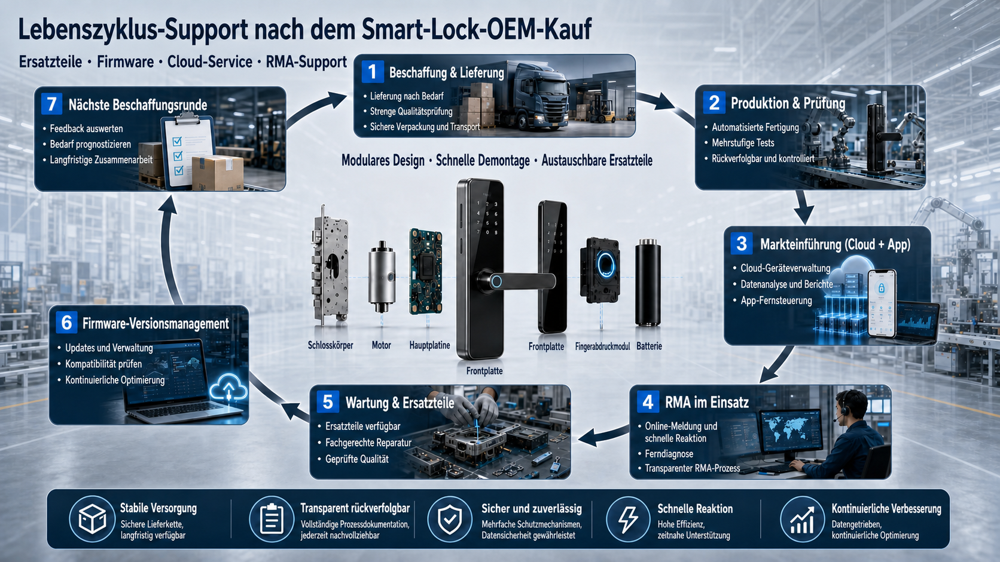
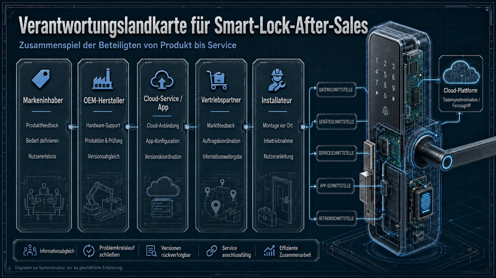
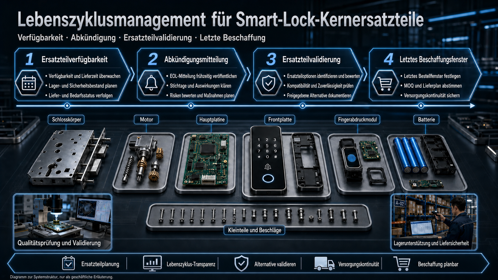
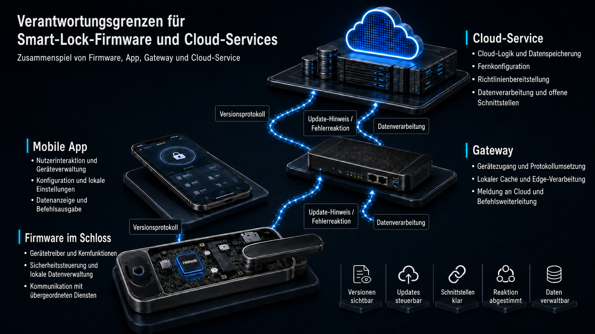

Este artigo é um enquadramento de avaliação B2B, não aconselhamento jurídico. I requisiti relativi a tutela dei consumatori, responsabilità del prodotto, protezione dei dati e risoluzione delle controversie devono essere valutati professionalmente per il mercato e le parti contrattuali interessati.
Un progetto OEM di serrature smart non termina con la consegna. Ricambi, firmware, servizio cloud, garanzia, RMA e tracciabilità determinano se un brand, un distributore o un team di progetto può gestire le attività nel lungo periodo. Questa checklist aiuta a documentare responsabilità ed evidenze prima dell'ordine e della produzione di massa.

Responsabilità post-vendita: chiarire prima i confini
Le serrature smart connesse coinvolgono titolari del brand, produttori OEM, fornitori di app o cloud, distributori e installatori. Senza interfacce documentate, un guasto tecnico può trasformarsi rapidamente in un problema generico di assistenza. Per ogni configurazione, definite chi riceve i guasti, chi li analizza, chi approva le modifiche e chi comunica con i clienti.

| Parte | Da definire per iscritto prima del lancio |
|---|---|
| Titolare del brand / acquirente | Mercati di destinazione, versione del prodotto, fornitura, contatto per escalation e comunicazione con il cliente. |
| Produttore OEM | Diagnosi hardware, ricambi, registri di produzione e collaudo, approvazioni delle versioni. |
| Fornitore di app o cloud | Account, accesso ai dati, interfacce, aggiornamenti, segnalazione incidenti e fine servizio. |
| Distribuzione e installazione | Condizioni di installazione, raccolta in loco dei guasti, feedback e istruzioni per l'utente. |
Pianificare i ricambi: disponibilità, dismissione e alternative
I ricambi non sono soltanto una questione di magazzino. Per corpo serratura, motore, PCB principale, pannello frontale, sensori e batterie, concordate periodo di disponibilità, preavviso di dismissione, approvazione dei ricambi di assistenza, finestra per l'ultimo ordine e documentazione delle versioni compatibili.

Trattare i periodi dei ricambi di assistenza come questioni di acquisto
Non basatevi solo su una promessa di “disponibilità a lungo termine”. Richiedete una dichiarazione specifica per il progetto che indichi componenti interessati, comunicazione delle modifiche, quantità minime e prove dell'approvazione dei ricambi. Le quantità necessarie dipendono dal volume installato, dai modelli di guasto, dalla strategia di scorte e dai canali di assistenza.
Nei progetti di serrature invisibili, spazio di installazione, costruzione della porta e metodo di fissaggio incidono sulla manutenibilità. La guida alla durata della batteria delle serrature invisibili e la guida di selezione ingegneristica per serrature invisibili aiutano a valutare energia, movimento meccanico e accesso per l'assistenza fin dalla fase di campionatura.
Firmware e servizio cloud: non confondere versioni e responsabilità
Quando sono presenti app, gateway o connessione cloud, hardware, PCB, firmware, app, gateway e interfacce devono avere versioni distinte. Concordate percorso di segnalazione, priorità, approvazione degli aggiornamenti, recupero dopo aggiornamenti falliti, accesso ai dati e limiti della manutenzione specifica per il cliente.

- Controllo delle versioni: identificate chiaramente hardware, PCB, firmware, app, gateway e interfacce cloud; archiviate versioni di campione e produzione.
- Gestione dei guasti: definite segnalazione, risposta iniziale, azione correttiva, verifica e comunicazione al cliente per tipo di guasto.
- Dati e account: stabilite regole di progetto per tipi di dati, titolarità, conservazione, accesso e misure di sicurezza.
Confini della garanzia: scomporre il “gratuito” in termini verificabili
Una dichiarazione di garanzia generale non è sufficiente. Chiarite data di inizio, durata e ambito per hardware, servizio software, finiture, parti di consumo, qualità dell'installazione, modifiche non autorizzate e condizioni di rete.
| Punto di verifica | Domanda da definire nell'accordo |
|---|---|
| Elementi coperti | Chi è responsabile di corpo serratura, motore, PCB, sensori, pannelli frontali, accessori, app e servizio cloud? |
| Condizioni operative | Tipo di porta, installazione, temperatura, umidità e utilizzo sono coperti per il mercato e il progetto? |
| Diagnosi | Chi esegue la diagnosi iniziale, quando è necessario un reso e come vengono documentate le cause esterne? |
| Rimedio | Quando si applicano riparazione, sostituzione del ricambio, sostituzione del dispositivo o unità sostitutiva? |
Processo RMA: creare un percorso chiaro per ogni reso
Un processo RMA solido inizia con una descrizione del guasto verificabile, non con la spedizione del prodotto. Numero di serie, versioni hardware e firmware, sintomi, foto o video, stato dell'installazione e passaggi già eseguiti accelerano la diagnosi remota.
| Fase | Dati da inviare | Esito concordato |
|---|---|---|
| Segnalazione del guasto | Numero di serie, versione, sintomi, prove visive e momento dell'evento | Numero pratica, referente e controlli successivi |
| Diagnosi remota | Installazione, alimentazione, movimento della porta, rete e app | Diagnosi, decisione sul reso e dati mancanti |
| Approvazione RMA | Numero RMA, indirizzo, imballaggio e informazioni doganali | Accordo su logistica e costi, fasi di lavorazione |
| Riparazione o sostituzione | Registro dei test, ricambi e versioni interessati | Rapporto di riparazione, sostituzione e istruzioni di installazione |
| Guasto ricorrente | Lotto interessato, modello di guasto, quantità e azioni immediate | Indagine congiunta e piano di comunicazione |
Registrare una segnalazione di guasto in modo completo
Oltre a indicazioni come “la porta non si apre”, i team dovrebbero documentare direzione di apertura, condizione di installazione, batteria o alimentazione, frequenza, cronologia degli aggiornamenti, apertura meccanica di emergenza e controlli già effettuati. Questo non sostituisce una decisione sulle responsabilità, ma offre a tutte le parti la stessa base diagnostica.
Tracciabilità: collegare ogni serratura a una versione
Un registro univoco del prodotto deve collegare numero di serie, lotto di produzione, versione PCB e firmware, lotti dei moduli chiave e registro dei test di fabbrica. Quando emerge una deviazione, ciò consente di delimitare il campo interessato invece di trattare tutte le scorte allo stesso modo.
Per RFQ e audit di fabbrica, consultate anche la guida all'audit di fabbrica delle serrature smart e l'articolo sul controllo qualità OEM/ODM, affinché registri di produzione, gestione delle versioni e feedback post-vendita lavorino insieme.
20 domande prima dell'ordine: checklist per la negoziazione
Ricambi e ciclo di vita 4 domande
- Come viene calcolato il periodo di disponibilità per dispositivi e componenti chiave?
- Come vengono emessi gli avvisi di dismissione e carenza?
- Esistono finestra per l'ultimo ordine, MOQ e disponibilità di stock confermata?
- Come viene documentata la compatibilità fra corpo serratura, motore, PCB, pannello frontale e sensori?
Garanzia e condizioni operative 3 domande
- Quali sono data di inizio, durata e elementi coperti dalla garanzia?
- Come vengono valutati errori di installazione, alimentazioni non standard e modifiche non autorizzate?
- Tipi di porta, temperatura, umidità e condizioni di installazione sono inclusi nella specifica?
Firmware, app e cloud 4 domande
- Chi mantiene firmware, app, gateway e servizio cloud?
- Come vengono segnalati, prioritizzati, corretti e comunicati i problemi di sicurezza o connettività?
- Come viene mantenuta la funzionalità essenziale dopo un aggiornamento fallito o un'interruzione del servizio?
- Chi gestisce dati, account, registri e diritti di accesso?
RMA e guasti ricorrenti 4 domande
- Quali foto, video, dati di versione e installazione richiede un RMA?
- Come vengono gestiti logistica, dogana, diagnosi, riparazione e sostituzione?
- Quali registri di diagnosi, riparazione o sostituzione fornisce il produttore?
- Quando inizia un'indagine congiunta su un guasto ricorrente?
Tracciabilità, formazione e accordo 5 domande
- Quali dati di serie, lotto, PCB, firmware e test sono disponibili per ogni serratura?
- Chi fornisce e aggiorna materiali per installazione, diagnosi e formazione?
- Come collaborano le parti quando un problema coinvolge app, cloud, sensore o modulo radio di terzi?
- Le questioni di mercato, contratto e controversia sono state valutate professionalmente?
- Tutti gli impegni sono registrati nell'accordo, nella specifica o nell'appendice di assistenza anziché solo discussi verbalmente?
Richiedete una checklist post-vendita per il vostro progetto di serratura smart
Indicate a WAFU il tipo di serratura, il mercato di destinazione, il volume d'ordine previsto e le difficoltà attuali, come manutenzione firmware, disponibilità dei ricambi, confini della garanzia o tempi RMA. Possiamo aiutare a strutturare i punti tecnici e di fornitura per il vostro progetto OEM/ODM.